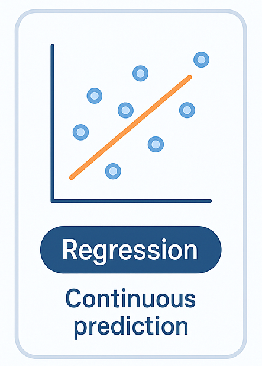
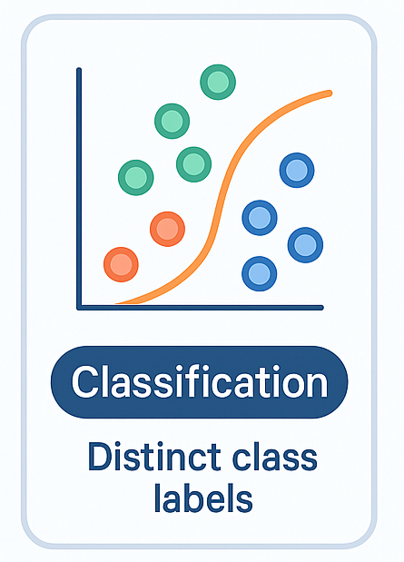

Supervised Algorithms
Supervised learning algorithms train a model to predict the correct output for a given input. They learn the relationship between input features and the target output. This approach usually relies on labeled data, where each input already has a known answer. It’s commonly used for tasks like classification and regression.
Regression

Regression is used to predict continuous values, like prices, quantities, time, or temperature. It focuses
on estimating a numeric value based on patterns in the data and is often used for forecasting and pricing.
Common Algorithms
- Linear Regression: Linear regression is one of the most common and basic machine learning algorithms. It predicts an output value by combining one or more input variables and finding the line that best fits the data. The model learns how much weight each input should have to make the most accurate prediction. There are also variations, like polynomial regression, that can model more complex or curved relationships in the data.
- Decision Trees: Decision trees make predictions by following a series of if-then decisions that branch out like a tree. Each step splits the data based on a condition until the model reaches a final prediction. They can be used for both classification and regression tasks. Instead of optimizing one overall function, decision trees focus on improving the accuracy of each individual split in the tree.
- State Space Models (SSMs): State space models are used to understand systems that change over time. They work using two equations: one that represents the hidden internal state of the system and another that connects that state to observable outputs. This helps model patterns in sequential data. SSMs are used in areas like engineering, financial forecasting, and natural language processing.
Classification

Classification is used to predict which category a data point belongs to. These tasks can be binary,
meaning there are only two possible outcomes like yes or no. They can also be multi-class, where there
are more than two possible categories.
Common Algorithms
- Naive Bayes: Naïve Bayes classifiers are based on Bayes’ Theorem, which uses probabilities to predict outcomes based on prior information. The model learns how strongly certain features are connected to specific results. It assumes that all features are independent from each other, which is why it’s called “naïve.” This assumption makes the algorithm simple and fast, which is why it’s often used for tasks like spam detection.
- Logistic Regression: Logistic regression is used for binary classification problems. It works by taking a weighted combination of input features and passing it through a sigmoid function that outputs a value between 0 and 1. This value represents the probability of a certain outcome. The model then classifies the data based on that probability.
- K-Nearest Neighbors (KNN): K-nearest neighbors classifies a data point based on how close it is to other labeled data points. The idea is that similar data points tend to appear near each other. The “k” represents how many nearby points the algorithm looks at before making a decision. The final classification is based on the category that appears most often among those neighbors.
- Support Vector Machines (SVM): Support vector machines classify data by finding the best boundary that separates different categories. Instead of directly predicting categories, the model focuses on identifying the optimal dividing line between classes. This boundary is chosen to maximize the distance between the closest points from each class. Those closest points are called support vectors and are what help define the boundary.